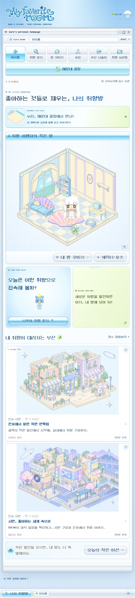
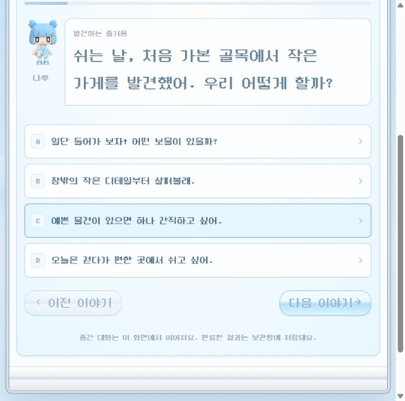
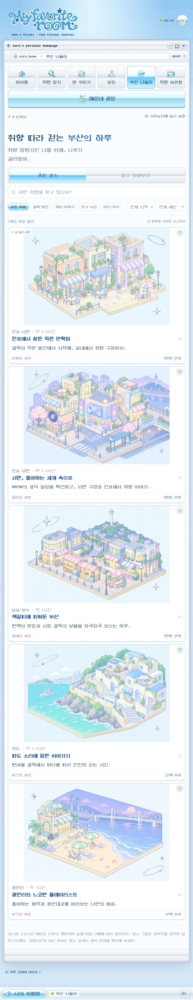
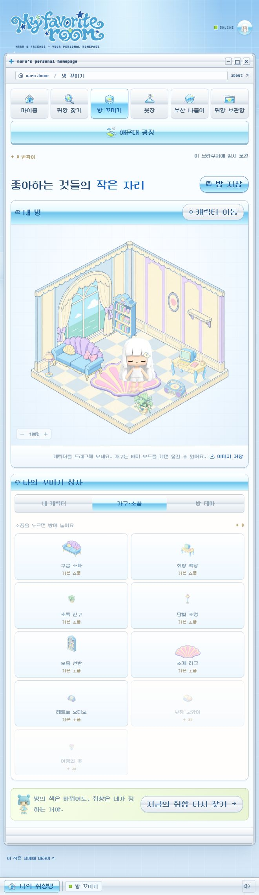
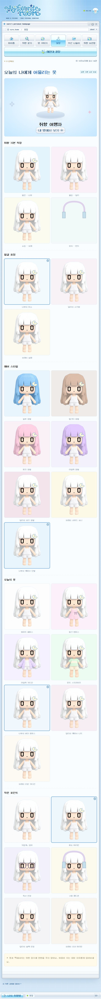
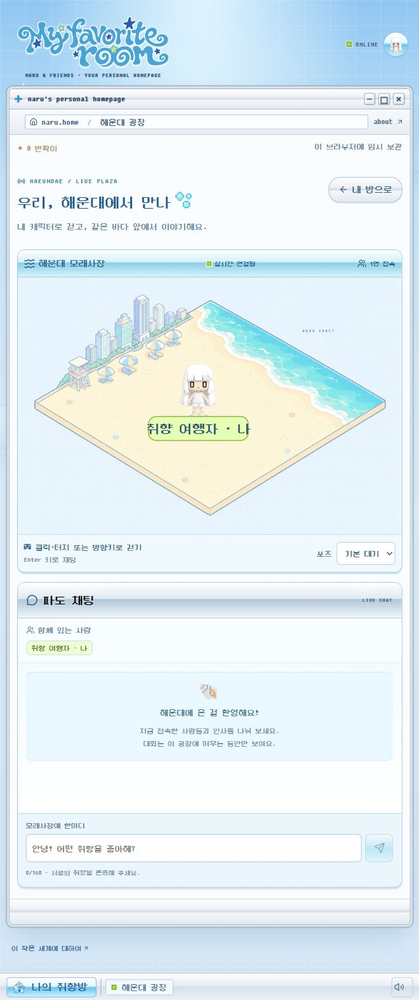

취향을 찾는 순간부터, 나만의 방과 부산 여행까지. 레트로 개인 홈페이지의 감성에 취향 테스트와 덕질 코스 추천, 방·아바타 꾸미기, 실시간 광장을 연결한 웹사이트입니다.

취향과 캐릭터, 나의 방을 모은 개인 홈페이지

8개의 이야기로 발견하는 나의 취향

취향과 지역·예산에 따라 고르는 나들이 코스

가구와 소품을 배치하는 나만의 공간

캐릭터와 스타일로 표현하는 나의 모습

아바타로 걷고 다른 접속자와 만나는 공간